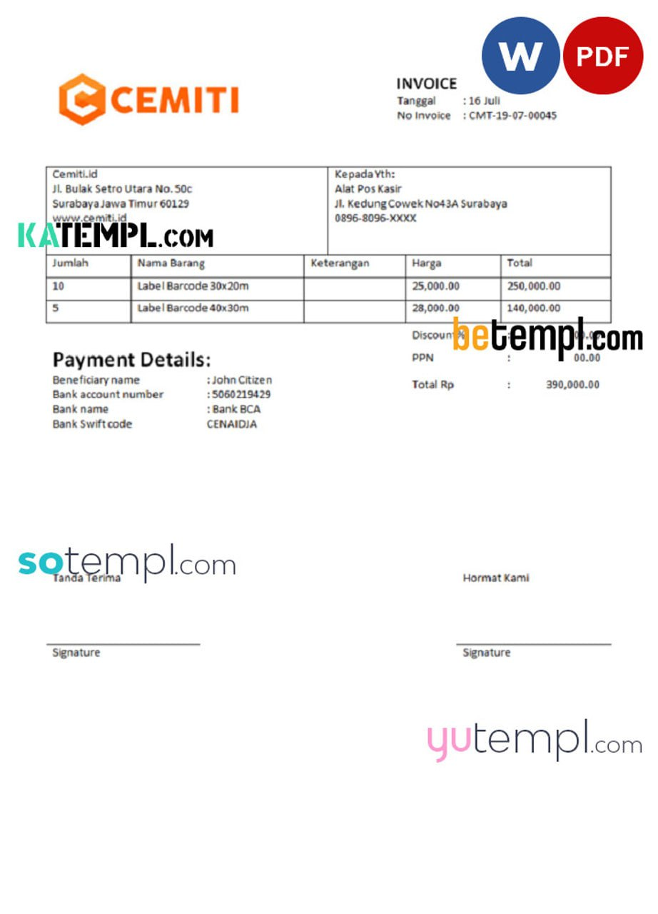

{kind=link}
{kind=link}
{kind=link}
{kind=link}
{kind=link}
Wybrano nowy Zarząd Wisły
W piątek odbyło się Nadzwyczajne Walne Zebranie Członków Wisły. Tym razem wybrano nowy zarząd oraz Komisję Rewizyjną. Prezesem klubu został Sebastian Wieczorek.
więcej >>Gol "Last Minute"
W spotkaniu rundy wstępnej Pucharu Polski Wisła Sandomierz przegrała z Sandecją Nowy Sącz 0-1 (0-0), po golu w ostatniej minucie Bartłomieja Dudzica.
więcej >>Wisła w podwójnej koronie
Wisła Sandomierz po mistrzostwie w lidze zdobyła Puchar Polski na szczeblu okręgu, zwyciężając 3-1 (3-0) Łysicę Bodzentyn. Bramki dla Wisły strzelili - Bartosz Szepeta, Jarosław Pacholarz i Mateusz Podstolak.
więcej >>Wisła w finale OPP
Wisła Sandomierz zagra w finale Pucharu Polski na szczeblu okręgu. Świętokrzyski Związek Piłki Nożnej przyjął dzisiaj rezygnację KSZO 1929 Ostrowiec Świętokrzyski.
więcej >>Wisła zostaje w III lidze
Wisła Sandomierz przegrała 1-2 (0-1) u siebie z Radomiakiem Radom w meczu rewanżowym baraży o udział w II lidze. Jedyną bramkę dla wiślaków strzelił z rzutu karnego Bartłomiej Gołasa.
więcej >>Wybrano nowy Zarząd Wisły
Gol "Last Minute"
Wisła w podwójnej koronie
Wisła w finale OPP
Wisła zostaje w III lidze
How I Brought More Professionalism to My Football Club with Simple Tools
Hey there, I’ve been part of the local football scene for years—first as a fan, then as someone helping behind the scenes. Supporting a club is more than just cheering on match day. It’s about building something strong, organized, and proud—on and off the field.
After the recent changes in leadership, our new board worked hard to bring fresh energy and better structure to everything we do. That’s when I realized we needed simple football club templates and tools to help us look and run like a serious club. Here are three things that made a real difference—and anyone can use them.
1. A Smart Way to Handle Our Club’s Finances
With the new board stepping in, one of our first priorities
was getting our financial records in order. We needed a way
to show income, expenses, and earnings clearly—without
hiring an expert.
A sports club earning statement template helped us:
- Fully editable with labeled layers
- Add club name, dates, and numbers in minutes
- Clean and professional look
Now, showing finances to sponsors and members is simple and looks professional.
2. Easy-to-Use Invoices That Build Trust
We work with local businesses and partners. Sending invoices quickly and professionally was important.
I started using a sports club invoice template that made life much easier. I can edit the club name, address, invoice number, and payment details in seconds. All layers are neatly named, so nothing gets mixed up. The design feels modern and sporty—perfect for a club like ours.
Since switching to this system, we’ve had fewer delays and better communication with partners. Small changes like this can make a big impact.
3. Banners That Catch Attention
Promoting our matches and events used to take forever. I wanted banners that looked great online and at the stadium but didn’t have time to design from scratch.
Then I discovered editable banner PSD templates. Each banner has clearly marked layers, so I just click, edit the date or player name, and save.
Benefits of editable banner PSD templates:
- Each layer clearly marked
- Easy to change dates, player names, or events
- Perfect for social media, posters, and ads
- No design skills needed
I’ve used them for social media, posters, and local ads. The design is simple but bold—perfect for grabbing attention. Final Thoughts: Small Steps, Big Results Even a small football club can feel professional with the right tools. Since using these editable templates, we’ve become more organized, professional, and better at sharing our story with the community.
From tracking earnings to promoting games, these simple resources helped us focus on what really matters—supporting players, engaging fans, and keeping the spirit of the game alive.
If you’re helping out at a local club, don’t underestimate the power of small upgrades. Sometimes, the right football club templates can make all the difference.